Ontdek hier de workshop van Christine Dumont: CELLULARIA

Mijn workshopprogramma voor het najaar zal in september online beschikbaar zijn.
Enkele afspraken ivm de workshops:
- Inschrijven doe je best via mail: stuur je naam en je telefoonnummer door en geef op voor welke cursus je wil inschrijven. Ik stuur daarna een bevestiging en vraag om het cursusgeld over te schrijven.
De betaling geldt als inschrijving. - Cursusgeld kan helaas niet terugbetaald worden. Slechts als je tijdig verwittigt, zodat er nog mogelijkheid is om een andere deelnemer uit te nodigen, krijg je een tegoedbon voor een volgende cursus. Je kan ook zelf voor een vervanger zorgen.
- Heb je interesse voor de workshops maar past het moment niet? Geef dan toch een seintje; misschien plan ik dan nog een extra workshopmoment, wie weet...
Workshops
Een workshop bij U thuis, in uw vereniging, in uw voorziening,... is ook mogelijk vanaf 5 personen. Alle ideeën zijn bespreekbaar. Neem even contact op met mij en we zoeken naar de beste formule.
Volgende workshops zijn momenteel mogelijk, zowel in eigen atelier (max. 6 personen) als op verplaatsing (min. 5, max. 12 personen).
De workshops zijn ook mogelijk op
- teambuildingsdagen
- vrijgezellenfeestjes
- verjaardagsfeestjes
- ...
Neem gerust contact op, liefst via mail: demoltine@hotmail.com
Ik maak dan een passende offerte voor U op.
Mogelijke workshops (Beelden onderaan deze pagina):
- Fimo en de basistechnieken
- Een schitterend Fimo-juweel in één les
- Fimo en speciale technieken
- Fimo in metalen ornamenten
- Faux stenen in Fimo
- Fimo: mag het ook geraspt zijn???
- Fimo met bladmetaal en glitter
- Bijzonder Fimo
- Beestig Fimo
- Fimo in alle kleuren van de regenboog!
- Bloemen en blaadjes in Fimo!
- Van Fimoklei tot juweel voor jongeren vanaf 8 jaar
- Vrolijke Fimofiguren
- Fimo in een zilveren kastje
- Geweven ketting met fimokralen
- Werken met Fimo in de kleispuit/extruder
- Bijzondere optische effecten
- Parelvanger in zilverklei
- Etnische kralen in fimo
- Wit-zwart of andere contrasten
- Zilverklei voor beginners
- Verrassend textiel in fimo
- ...ook andere vragen/ideeën zijn bespreekbaar.
OPMERKING: voor de workshops met ! heb je best al een andere fimo-workshop gevolgd!
Enkele beelden van de workshops
- Fimo in een zilveren kastje
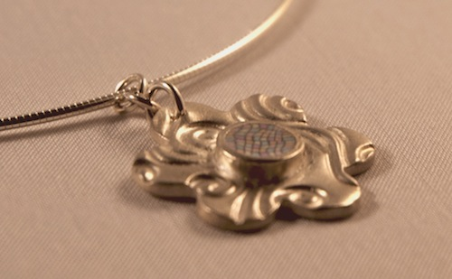 - Parelvanger in zilverklei
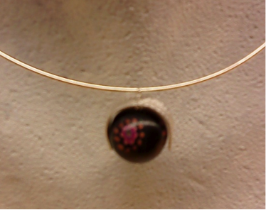 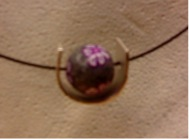 - Fimo: mag het ook geraspt zijn???
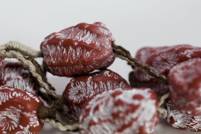 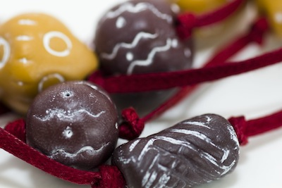 - Etnische kralen in fimo
- Verrassend textiel in fimo
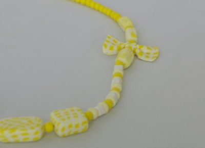 - Alle kleuren van de regenboog
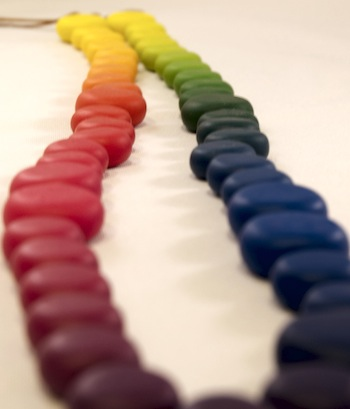 - Decoratieve hanger met vloeibare fimo
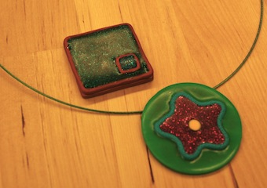 - Fimo en metalen ornamenten
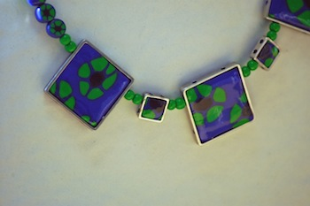 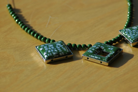 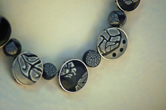 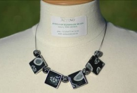 - Beestig Fimo
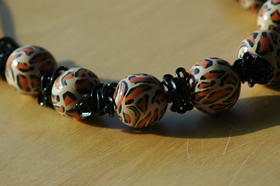 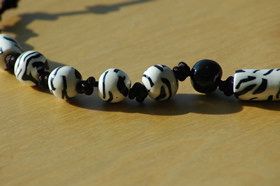 - Bijzonder Fimo
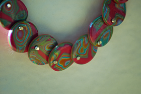 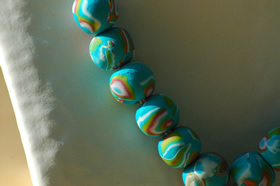 - Bloemen en blaadjes in fimo
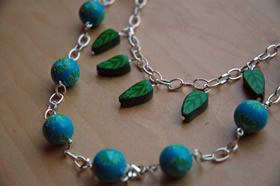 - Fimokralen met speciale technieken
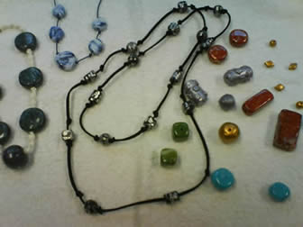 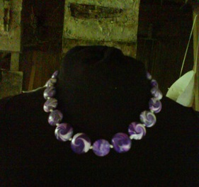 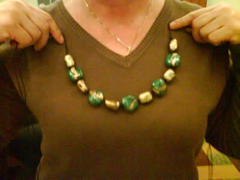 - Van fimoklei tot juweel voor jongeren
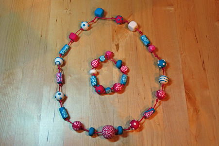 - Geweven ketting met fimokralen
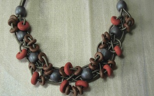 - Werken met fimo in de kleispuit/extruder
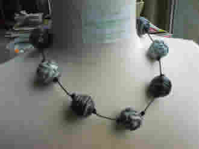 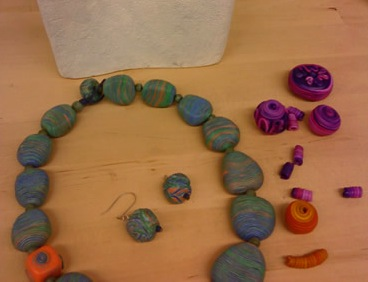 - Bijzondere optische effecten
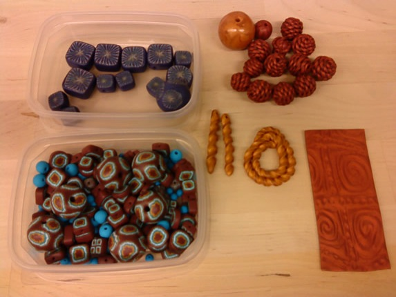 - Wit-zwart of andere contrasten
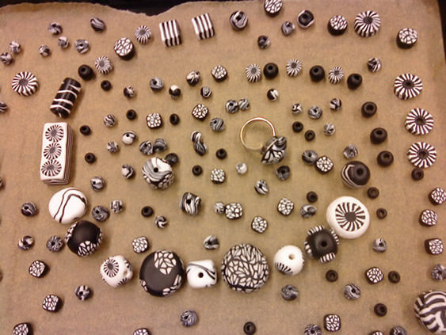 - Zilverklei voor beginners
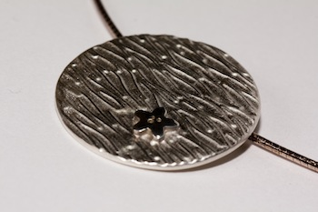